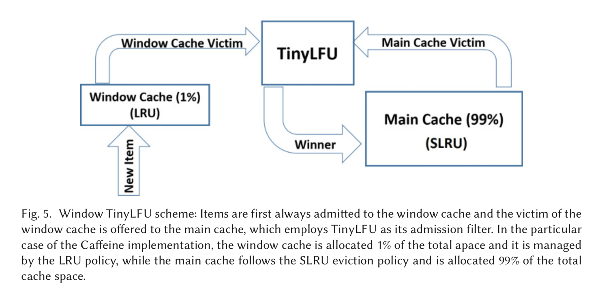

TinyLFU：A Highly Efficient Cache Admission Policy
1. LRU 和 LFU 的缺陷
作为我们常用的缓存淘汰策略，LRU 和 LFU 一直被大家所熟知，但是它们其实也存在一些缺陷。
以 LRU 为例，当一个数据被访问的时候，就会将该数据给移动到最前端，这就存在一个问题，那就是如果有那么一瞬间访问了很多的数据，而这些数据其实只会访问一次，这就导致链表中的那些热点数据被迫移动到链表尾部，从而存在被淘汰的风险。
因此就可以使用 LFU 来解决这个问题，它为每一个元素都保存了它的被访问次数，访问次数高的将不容易被淘汰，如果访问次数相同就可以按照 LRU 的规则，比较谁是最新访问的。
总结来说：
LRU 优点：实现简单，能满足大部分的需求；缺点：对热点数据的命中率不如 LFU
LFU 优点：对热点数据的命中率更高；缺点：① 难以应对突发的稀疏流量。② 可能存在旧数据长期不被淘汰。③ 由于需要记录被访问次数，造成空间浪费。
正是由于 LRU 和 LFU 存在或多或少的问题，因此就需要一种新的机制来代替它们。
2. Window-TinyLFU
TinyLFU 采用了 Count-Min Sketch 算法来统计数据的访问频率。在该算法中，我们认为一个缓存被访问 15 次就已经算是很高的频率了，因此只需要 4bits 就可以记录一个数据的访问频率。同时，为了解决 cmSktch 算法中出现的假阳性问题，可以给同一个数据多次计算访问次数，然后在查找的时候，就找到这几个不同的位置，然后统计它们的最小值作为结果。
在实现方面，假设我们的 LFU 容量大小为 n，就可以初始化一个 4 行 n 列的二维数组。对于一个 key 而言，使用四种哈希函数，分别将其分布到二维数组的每一行中，然后找到对应的位置，将其数量进行自增。在查找的时候，同样使用四种哈希函数，然后找到该 key 在二维数组中的每一行的访问次数值，然后取四个值中的最小值。
同时为了解决第二点的问题，在使用过程中，可以维护一个总访问计数器，如果该计数器达到了访问上限，就可以将 cmSketch 中的二维数组中的值全部减半操作，这就解决了缓存保鲜的问题。
接下来为了解决第一个问题：难以应对突发的稀疏流量。Window-TinyLFU 的策略中，采用了两个 LRU。其中前端的小 LRU 叫做 Window LRU，它的容量只占用百分之一，它的目的就是用来存放短期的突发访问数据。而用于存放主要元素的 LRU 被称为 Cache LRU，它占内存的百分之九十九。其中它分为两个区域：Protected 和 Probation。其中 Protected 区域（我们将其称为 A1 段）占 Cache LRU 的 80%，而另一个区域 A2 段占 Cache LRU 的 20%。

具体上，对于所有的数据都会存入 Window LRU，当 Window 缓存满了，记录淘汰的数据 data1，然后判断 SLRU 中有没有满，如果 SLRU 没有满，将 data1 给插入 SLRU 中的 A2 段。如果满了，就从 A1 中淘汰掉一个数据 data2。此时就需要通过 cmSketch 来判断两者的价值，输的一方将被彻底淘汰，赢的一方则插入到 A2 中。
而在 A2 中的数据，如果被再次访问到了，就需要升级到 A1，并将 A1 中淘汰的数据给放入 A2 中。
最后一个问题，为了过滤掉一些低频访问的数据，防止它们污染缓存，可以使用 DoorKeeper 机制，它是一个 BloomFilter。如果一个元素，在 Doorkeeper 中，则直接插入 TinyLFU 的主结构，否则先插入 Doorkeeper 。对于数据查询，会将 Doorkeeper 中的那一个计数值也加到计数值上去。这样 DoorKeeper 就可以将低频数据拦截住，降低了计数器数量。
3. Redis 中的 LRU 和 LFU
在 Redis 中的内存淘汰策略中，就使用到了 LRU 和 LFU。
Redis 实现的 LRU 是一种近似的 LRU 算法，它在进行淘汰的时候，会采用随机采样的方式，也就是随机抽取 5 个值，然后比较它们的最近的访问时间戳（被记录在 redisObject 的 lru 字段上），淘汰掉最久没有使用的数据。
对于这样的方式，一是不用为所有的数据维护一个大链表，节省空间。二是无需考虑在访问数据的时候将访问项给移动到链表头部，节省时间开销。
对于 LFU 算法，Redis 将 redisObject 中的 lru 字段拆分成两部分，其实 16 bits 用来记录访问该 key 的时间戳，另外的 8 bits 用于存储 logc，也就是 Logistic Counter，它记录的是 key 的访问频次，值越小越容易被淘汰，初始值为 5。
当 Redis 访问一个 key 的时候，首先会对 logc 进行衰减，衰减的值跟前后访问时间的差距有关系，如果上一次访问的时间与这一次访问的时间差距很大，那么衰减的值就越大，这样实现的 LFU 算法是根据访问频率来淘汰数据的，而不只是访问次数。访问频率需要考虑 key 的访问是多长时间段内发生的。key 的先前访问距离当前时间越长，那么这个 key 的访问频率相应地也就会降低，这样被淘汰的概率也会更大。
对 logc 做完衰减操作后，就开始对 logc 进行增加操作，增加操作并不是单纯的 + 1，而是根据概率增加，如果 logc 越大的 key，它的 logc 就越难再增加。
4. MySQL Buffer Pool 中的 LRU
为了解决预读失效和 BufferPool 污染问题，MySQL 改进了 LRU 算法。
- 预读失效：MySQL 在加载数据页的时候，会将其相邻的数据页一起加载进来并放在链表最头部，这就是 MySQL 的预读机制，但是如果当预读页一直不会被访问，却占据链表的头部，而被淘汰的数据页可能是频繁访问的页，这样就降低了缓存命中率。
为了解决预读失效，MySQL 将 LRU 划分成两个区域：old 和 young 区。其中 young 区在链表的前半部分，比例为 63：37。对于预读的页只会加入到 old 区域的头部，只有当页被真正访问的时候才会插入到 young 区域的头部。
- Buffer Pool 污染：当一个 SQL 语句扫描了大量的数据的时候，可能会将 BufferPool 中的所有的页都给替换出去，导致大量热点数据被淘汰。
对于这些全表扫描的语句，很多的缓冲页其实只会被访问一次，如果就因为只访问一次而进入到了 young 区域，就会导致热点数据被替换。因此就需要提高数据进入到 young 区域的门槛，也就是增加一个停留在 young 区域的时间判断。
具体是这样做的，在对某个处在 old 区域的缓存页进行第一次访问时，就在它对应的控制块中记录下来这个访问时间：
- 如果后续的访问时间与第一次访问的时间在某个时间间隔内，那么该缓存页就不会被从 old 区域移动到 young 区域的头部；
- 如果后续的访问时间与第一次访问的时间不在某个时间间隔内，那么该缓存页移动到 young 区域的头部；
而该间隔时间默认是 1000 ms，也就是说，只有同时满足「被访问」与「在 old 区域停留时间超过 1 秒」两个条件，才会被插入到 young 区域头部，这样就解决了 Buffer Pool 污染的问题 。
另外，MySQL 针对 young 区域其实做了一个优化，为了防止 young 区域节点频繁移动到头部。young 区域前面 1/4 被访问不会移动到链表头部，只有后面的 3/4被访问了才会。
5. Reference
论文原文：https://arxiv.org/pdf/1512.00727.pdf
硬核课堂：实现更高效的缓存 解读TinyLFU算法_哔哩哔哩 bilibili
go-tinylfu/tinylfu.go at master · dgryski/go-tinylfu (github.com)